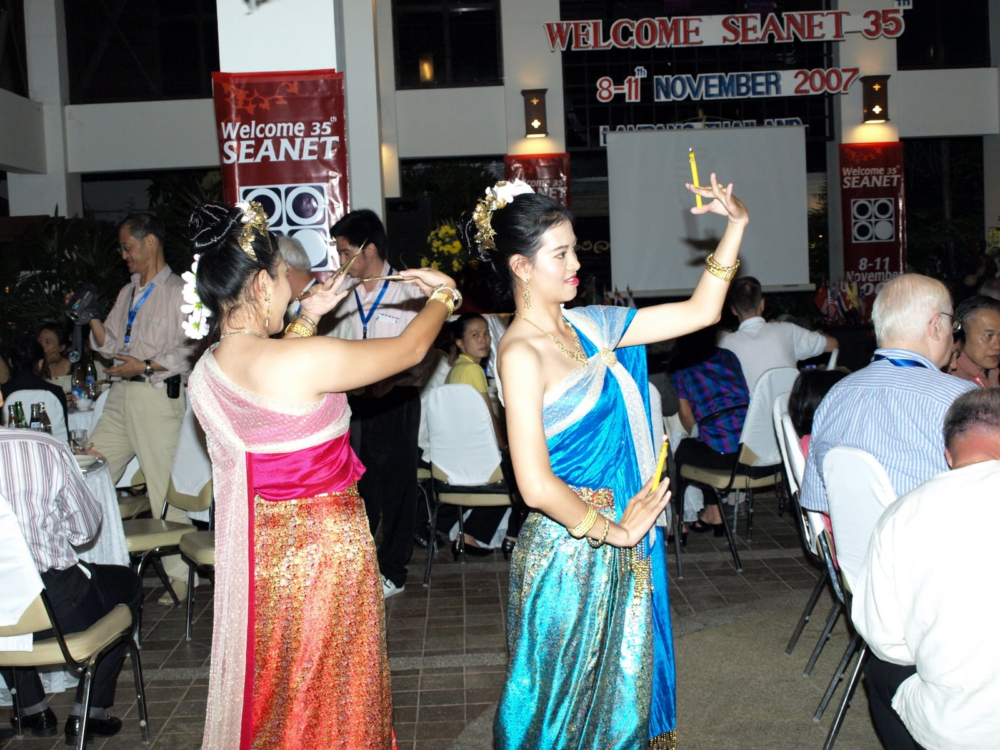
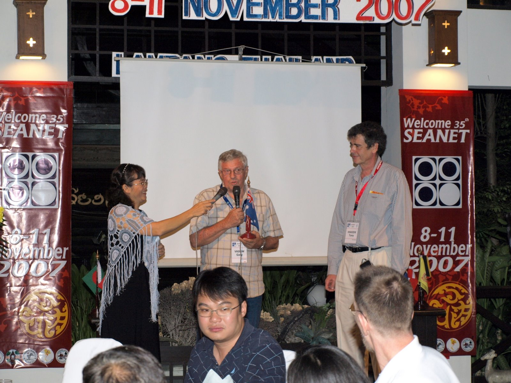
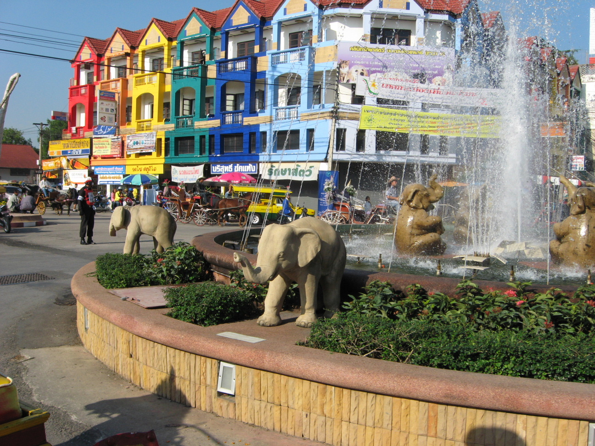
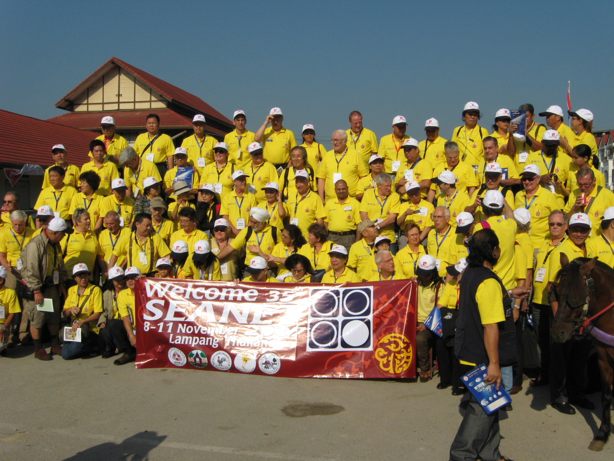
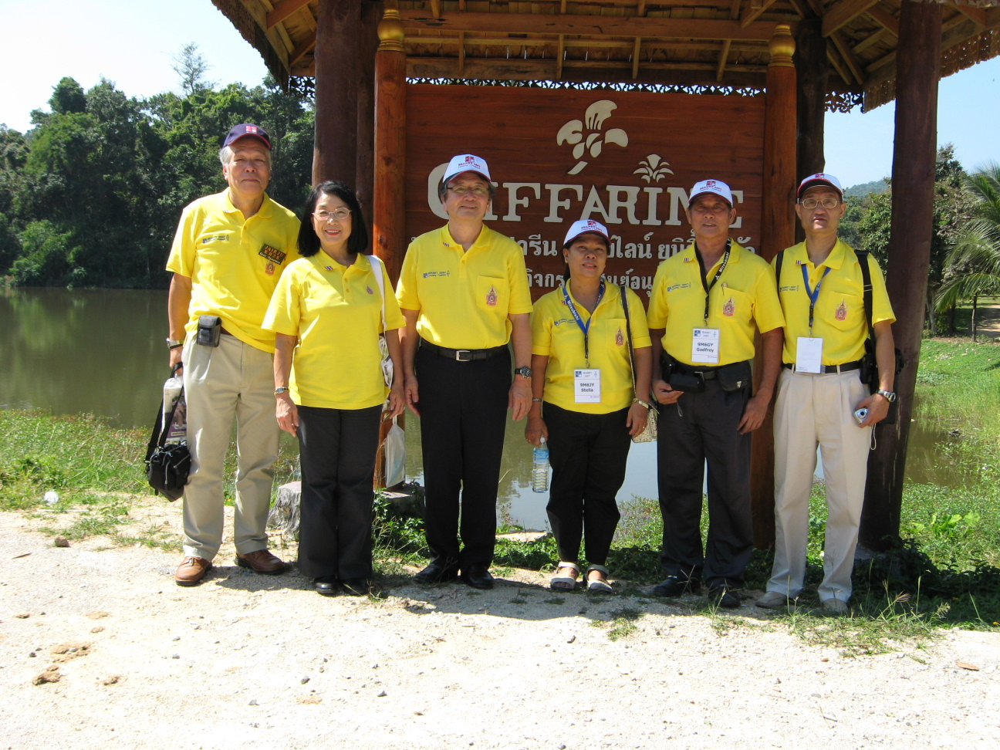
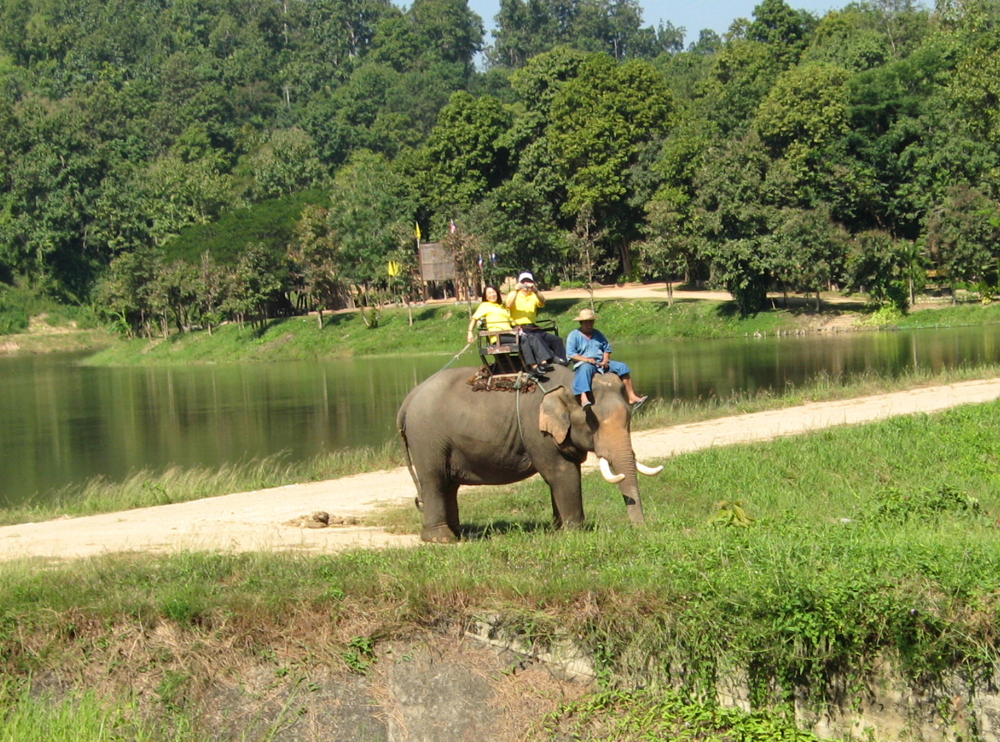
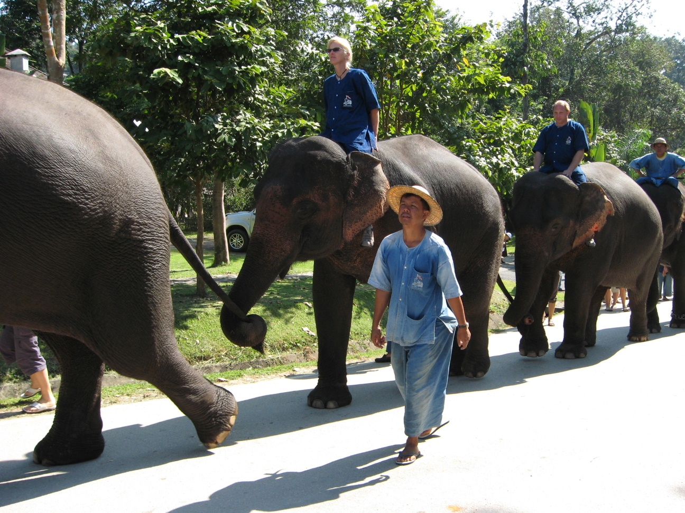
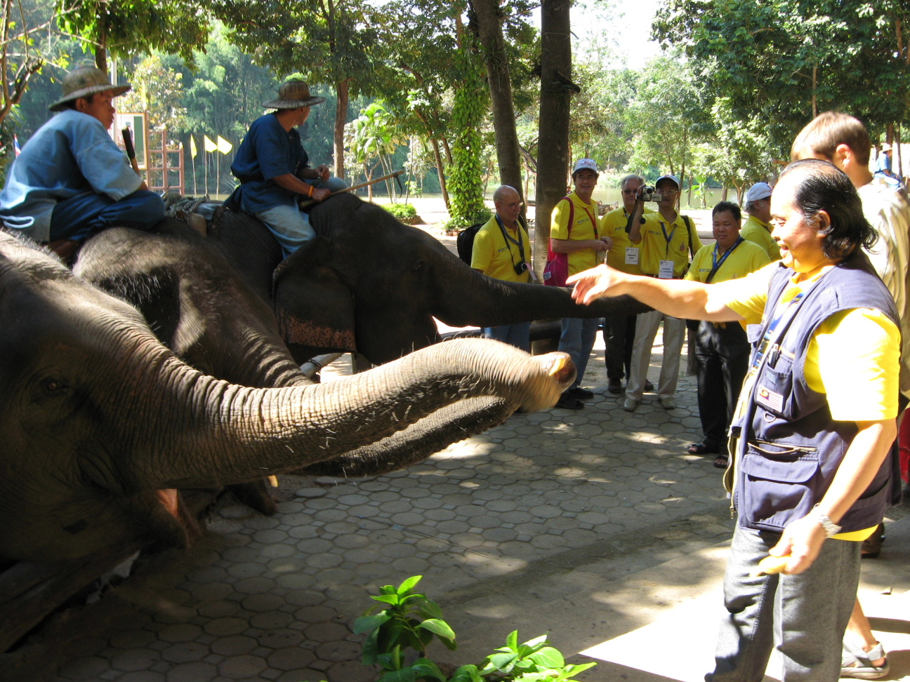

SEANET 2007

Lampang Tahiland
08.Nov-11.Nov.2004
35th Annual SEANET Convention
|
◎ 第35回SEANET Convention 2007(South East Asia Net Convention)が11月08日-10日の4日間、
タイ(HS)のランパン(Lanpang)で開催されました。
私(JA1RJU)のタイで開催されたSEANETへの参加は、2004年のバンコク大会に続き2度目になります。 ランパンはバンコク国際空港から国内線に乗り換え、空路1時間ほどの北部のチェンマイ空港で降り、 そこから車で約100Kmほど南に位置する都市です。 タイ国で4番目の大きさといわれる高原の静かな場所にありました。 海岸に近いバンコクと違い高地にあるためか、日中でもカラリとした気温で、南国とは思えない爽やかな気候でした。 首都のバンコクとは違い、交通の便も良いとは言えない場所でしたが、地元のボランティアを含めSEANET参加者は150人ほどが集まり盛大でした。 日本からも10数名が参加しましたが、今回もSEANETの常連のJA1BRK・米村さんご夫妻と成田からご一緒させて頂きました。 午前中に成田を発ち、予定通り夕方にはバンコクに到着したのですが、現地までの飛行機の乗継ぎや、 車での山越えに一時間以上の時間を取られ、ホテルに到着したのは午後9時頃でした。 初日は行事の予定も無く、そのまま部屋に入って休むだけ...と思っていましたら、なんとほとんどのメンバーが集合していて、 既にホテルの小宴会場では大パーティー？の真っ最中でした！。 |


|
われわれ3人は、予定の時間に遅刻して到着し、"頭を掻きながら"会場に駆け込んだ参加者の様な感じで、
なんともバツの悪い思いでした。 いつもの大会なら、初日は三々五々、到着する"顔見知り"が集まって、勝手に食事をして過ごすのが普通だったのですが... 初日からこんなにパーティーで盛り上がってしまったら、これから先の"本番"はどうなるのか、と心配になるほどでした。 滞在初日は暇をみて記念局のHS35SEAの運用でも...と考えていたのですが、最初からこれではその時間もありません。 とりあえずこの日はビールで乾杯した後、残り物？の料理を食べながら、配られた翌日からのプログラムに目を通して、 ぎっしり詰まった日程に不安？になりました。 ◎ SEANET 2007 Programes
08th November(Thu) 2007
11:00-19:00 Register/receive souvenirs/socialise.
19:00-19:30 CQ SEANET-HS35SEA
19:30-21:30 Opening Ceremony/Dinner.
09th November(Fri) 2007
08:30-09:00 Group photo-taking.
09:00-16:30 (1)Sightseeing/temple visit/ceramics factory,personalize with
with own message.
(2)E-Wedding on elephant back.
16:30-19:30 Relax/dress for dinner.
19:30-22:00 Khantoke/Loy-kratong/flying lantern/folk dance
10th November(Sat) 2007
09:00-11:00 Visit Mae Moh power plant/meet EGAT radio amaterurs
11:00-12:30 Lunce.
13:00-16:30 Take a hot spa/egg boiling.
16:30-19:30 Ride in a horse carriage / OTOP shopping
19:30-20:00 Relax/Dress dinner (national dress)
20:00-23:00 Gala dinner/ national performances.
11th November(Sun) 2007
08:30-10:30 Presentation Sessions.
10:30-11:00 Coffee break.
11:00-12:00 Vote for SEANET 2009 host(HL1KDW).
12:00-13:00 Farewell Lunch
13:00- Departure
  "中央駅"まで馬車で移動、全員で記念写真。
  80バーツで約15分の"象の散歩"が楽しめる/象に乗るJA1BRK・米村さんご夫妻  
|